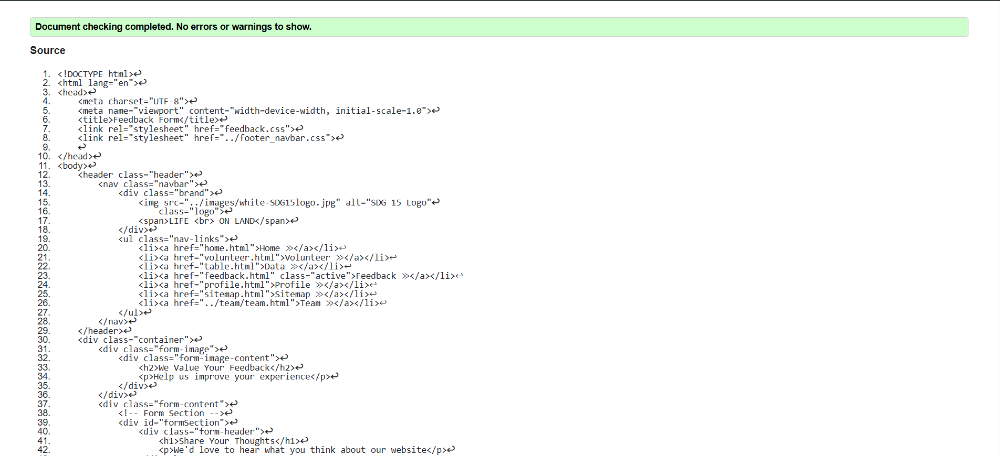
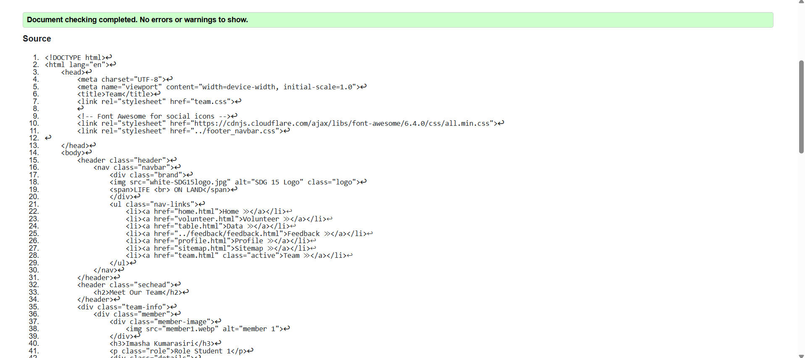
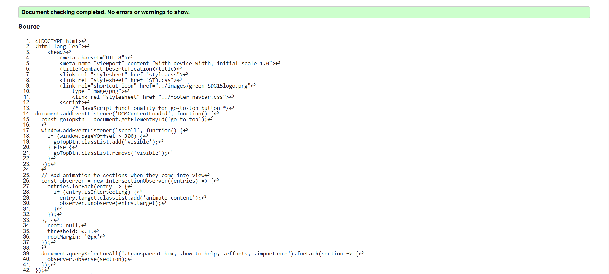

Feedback Page
The feedback page allows users to submit their comments, and the page provides a preview of the user's input. It includes client-side validation using JavaScript to ensure the correctness of the submitted data. Please refer to the Validation Section of the Validation Page for more details.
Feedback Page Validation
HTML Validation
Validation Proof
Reflection of the Validation Report - Feedback Page
During the validation process for the Feedback page, I focused on ensuring that the form elements were correctly structured and validated. JavaScript was used to provide real-time validation, ensuring that user input is correct before submission. This included checking for missing fields and ensuring the proper format for email addresses.
The validation tool helped identify minor HTML and CSS issues, such as missing closing tags and redundant styles. These were addressed to ensure that the page rendered correctly across different browsers.
Through this process, I learned the importance of providing a smooth and error-free user experience. The validation process not only improved the page's functionality but also enhanced its accessibility by adding alt text for images and ensuring proper form behavior on various devices.
Team Page
The Team page displays information about the project members and their roles. It includes detailed sections for each team member, including their profile pictures and contact details. The page is styled using CSS to ensure readability and good layout. Please refer to the Validation Section for more details.
Team Page Validation
HTML Validation
Validation Proof
Reflection of the Validation Report - Team Page
The Team page required careful attention to layout and structure. I had to ensure that each team member’s details were presented clearly. Some minor HTML issues, such as missing closing tags, were found and resolved during validation.
Additionally, accessibility concerns were addressed by adding alt text to images and ensuring that each section was properly labeled for screen readers. The validation process also ensured that the page displayed correctly on all devices, maintaining a responsive layout.
Content Page
The Content page provides detailed information about the project’s objectives and goals, with images and supporting text. The layout is responsive, created using flexbox and CSS, to ensure a good user experience on any device. Please refer to the Validation Section for more details.
Content Page Validation
HTML Validation
Validation Proof
Reflection of the Validation Report - Content Page
The Content page had several sections, and the main challenge was ensuring the layout was responsive across devices. There were minor HTML errors that were quickly fixed, such as missing `alt` attributes for images and ensuring the sections were correctly nested.
During the validation, I also focused on improving the CSS to reduce redundancy and ensure that styles were applied consistently. The result was a clean and functional page that displayed well on different screen sizes.